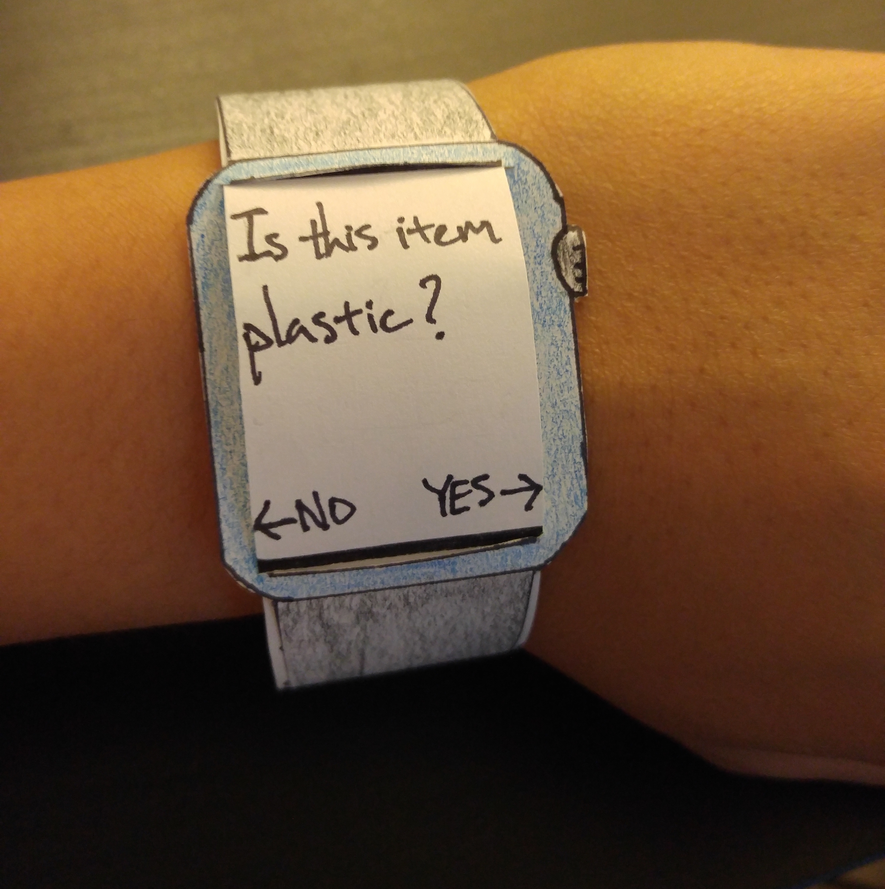
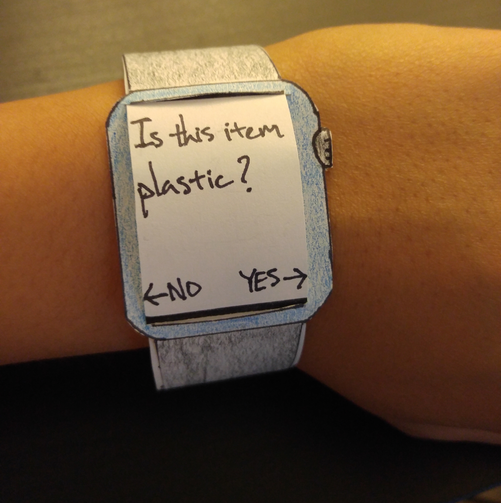
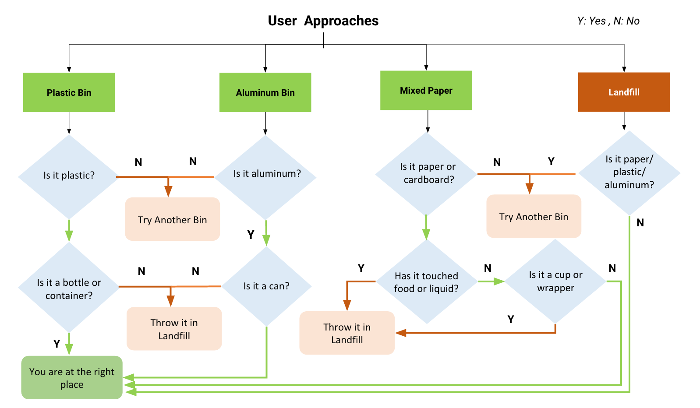
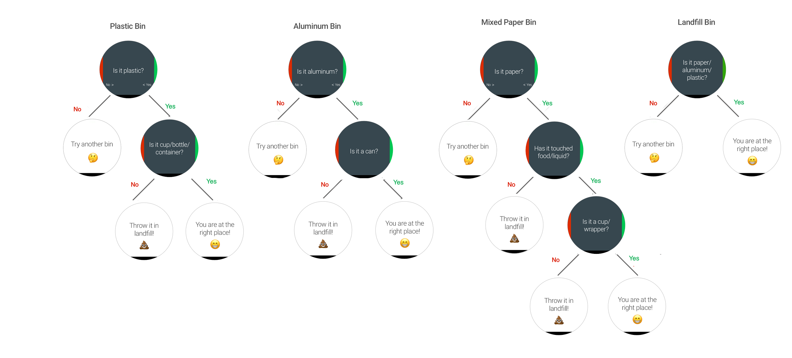

LetterBoard
A responsive letterboard to improve rapid prompting method for autism
Introduction
The Rapid Prompting Method (RPM) was developed by an Indian mother, Soma Mukhopadhyay, to teach her non-verbal austistic son, Tito, to communicate. The main objective of RPM is to help “verbal and written expression”, i.e. to read, write and type.
Letterboards are key artifacts to facilitate learning through RPM. During initial phases the letterboard is used by educators (teachers and/or parents) to conduct lessons.
In order to augment the evaluation method, by making it more data-driven we designed a prototype smart letterboard that captures inputs as well as logs performance to responsive interface in realtime.
My Role
Constructing this instrument was the core component of our coursework in Design of Interactive Environments. The initial user research involved all group members participating. The division of labour for the development phase was more specific. Broadly, it was built on 3 pillars; hardware, network and interface.


The Problem
How RPM Works
We were fortunate to get access to a private english lesson of an autistic child. The three major players of a session like this are the student, the facilitator and the parent. In some cases the latter two can be the same. Based on this, we can describe the communication between the players as follows:

Practitioners of this method are often self-taught or acquire this skill through workshops, or through other facilitators. Parents, for example, pick this up from facilitators, so that they are equipped to conduct lessons on their own. Our understanding is that continuous use of this method can lead to children communicating unassisted via the letterboard and eventually even move onto typing.
Observations
One of our major observations was the asynchronous relation between the child's cognitive ability and their motor movements, and how this influences
their performance with during an RPM lesson.
In the case we observed, the child was in the verbal band of the autism spectrum. This helped us discern their general ability in spelling as well as constructing sentences.
Often however, this would not entirely line up with the coordination of their input. To put it simply, the letter they want to indicate might be 'X' but their input would be
at 'R'.
However, we could extrapolate that in the case of non-verbal autism, such an assertion is hard to make, since the child's general learning ability can be questioned, i.e.
they letter they wanted to indicate is indeed 'R', even though that's not the correct letter.
Challenges
Based on our personal observations and informal interviews with the facilitator and parent we could identify certain painpoints of this method.
As a process, using RPM via letterboards to teach is very instinctive and intimate. Different individuals could have varying approaches to this,
for example the facilitator we observed had developed a sing-song prompting style. Interestingly enough the parent did not use this method to nudge the child.
The onus is on the facilitator to guide the child during their learning phase. However, the method of evaluating a child's perfomace through a session is
rather rudimentary - pen and paper.
Apart from these challenges other issues that may arrise are specific to the child's inherent or learnt skills upto that point.
The Design
User
Before designing our solution we wanted to concretize who really our user is. To simple put our users can be described as:
Our typical user also needed to be characterized, so we personify them as follows:
Divergence
To continue with our design process we consciously decided to consider infrastructural inconsistencies or inadequacies (such as the structural design of bins) as a constraint we have to work around.
Thus we wanted a solution that is robust as well as easy to implement and scale - this helped us filter out ideas like static redesigns of the graphics or the structures of the bins.
In order to structure our brainstorming solutions we agreed to look for ideas within the realm of Behavioural Technology. The reason for this was to mitigate the challenges faced by the user by persuading them to take better decisions in regarding daily waste segregation.
Thus there were 3 main verticals within which we explored possibilities:
Thus through the course of our brainstorming we arrived at multiple ideas. Each of these not only involved multiple different technological approaches but also dealt with different time frames of interventions of the waste-segregation activity cycle.
While we did come up with a variety of ideas, many of these overlapped with each other in certain atomic aspects. Another point of note at this stage was that not every idea was solving the same problem - not exactly anyway.
Total number of ideas we came up with at the end of brainstorming the brainstorming session.
Convergence
From our literature review of other solutions in the same space as us, we stumbled across mentions of the Trans-theoretical Model. This explains human behaviour in 5 chronological phases. We used these different stages to arrange our ideas.
Sorting our ideas along these lines helped us understand which ideas were similar or had a similar method of approach. Due to this we were able to merge aspects of certain ideas more easily. Moreover we were able to competitively eliminate ideas that operate within the stage.
Thus we were able to arrive at 4 distinct ideas, each of which tackles the problem from a different angle and employs its own exclusive technique to solve the challenge of segregating waste.


We made low-fidelity prototypes of each of these ideas to gain more constructive feedback about each of them and ultimately agreed to select the one idea that we felt was at the right intersection of effectiveness and feasibility.


 

Ultimately, we narrowed down the Wearable Nudge Smartwatch App as our final idea. This was based on the fact that it was quick to build, elegant and was far more specific in measuring what we intended to define as our success metrics.
The Development
Considerations
Before we went onto deciding a functional prototype to build we needed to draw out certain design decisions that we'd need to adhere to while selecting a solution. These were:
Our goal is to ultimately evoke a change in user behaviour by persuasive nudges and not by force. The idea is to aid the user in making the choice themselves by carefully guiding them in the right path.
The phase where we believe an intervention would be effective was right when the action is taking place. This would dynamically catch the user's attention in the moment and requires less memorisation from the user.
Since our problem area involves an everyday activity, the user's comfort is of our utmost priority. Therefore, the solution shouldn't strongly disrupt the user's routine behaviour and thus should be easy and quick to use.
Ultimately, we want the user to not only do the right thing, but to build knowledge. Naturally, repeated use and clarity of communicating information are prime.
The idea that best fit these criteria was that of the Wearable Nudge Smartwatch App.

How it Works


Final Build
We identified two main areas of development including the wearable app itself and proximity sensors to be installed on the bins to trigger reaction in the nudging app. Our initial plan was to develop the wearable app with Java and the proximity sensors with Arduino. However, due to the limited time frame given, we decided that sensing the proximity between user and bin and then triggering a signal to the user’s device can be replaced by a Wizard-of-oz technique. Therefore, we also developed an auxiliary wizard dashboard for a researcher to send signals and trigger a reaction on the wearable.
Before we began developing, we focused on refining the content. Our team paid another visit to the Office of Facilities Management to refine the content and the decision tree to be used in the wearable app that our users traverse through to segregate the waste correctly. We also used graphic design tools such as Sketch to create a quick preview of the UIs before diving into development.
Some of the specific decisions we took while building the device were:
The sensor-wearable architecture was complicated to construct given our time limitations. Thus we felt manually triggering a remote notification on the smartwatch when the user walks up to a bin can help us achieve the same effect.

To ensure maximum convenience we wanted the user to complete the given task with maximum speed. In order to do this we kept a simple aesthetic with basic interactions to minimize distractions.

Every question asked should be short and to the point as well as easy to understand for the user. Moreover, the user shouldn't be asked too many questions.
The UI should clearly indicate to the user if they are being asked a probe question or if they are being prompted at an imperative point.
Our final prototype is also designed to help us measure 2 different success metrics. This is done by locally storing the users decisions for each question and how logging the timestamp since their initial probe and their final prompt.
Speed
Measuring this passively removes the biases manually logging it in front of the user can lead to
Accuracy
Logging user decisions not only helps tally correctness of choices but also helps understand how they arrived at a certain state
Future
Proposed Study
Participants will take part in a single session where they interact with reco by completing a waste sorting task. The task involves sorting predetermined list of 15-20 sample waste items into a group of bins on Georgia Tech's campus. The list of waste items is designed to be representative of everyday household waste that may be generated by a student. To account for order effects, waste items will be presented in a random order.
For our first two research objectives, the following two hypotheses will be under consideration:
H1 (comparing accuracy) -
The overall accuracy of sorting waste will be significantly higher for the group using the reco compared to the controlled group.
H2 (comparing convenience using task time) -
The overall task time will not be significantly different between the two conditions.
The study will consist of 40 participants in a between-subjects design, recruited from among the students at Georgia Tech. The experimental group would be performing the task equipped with reco while the control group performs the task as they would in everyday life.
From the findings of this study we hope to understand how well reco really does what it set out to do. And from there we can learn how to hone it into a real scaleable and more accessible solution for the future.